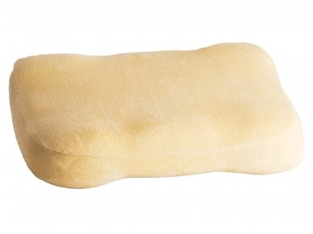

Ortopedinės pagalvės, skirtos sėdėti ant kėdės: modeliai biuro kėdei po nugaros ir stuburo
 Apartamentai Namas Kraštovaizdžio dizainas Pastatai Remontas Dizainas ir išdėstymas Durys ir arkos Apšvietimas Baldai Tekstilė Įėjimas salėje Svetainė Miegamasis Spinta Lodžijos ir balkonai lt.decorexpro.com Tekstilė PagalvėsOrtopedinės pagalvės, skirtos sėdėti ant kėdės
Išoriškai sveikas žmogus nesitiki, kad per ilgą sėdimą darbą dubens vidiniai organai netenka tinkamo kraujo tekėjimo, būdami perduodamoje būsenoje. Sėdėjimas ant kėdės negali būti vadinamas natūralia laikysena, nes šiuo metu nereguliarus stuburo krūvis daro neigiamą poveikį organizmui. Šiek tiek vėliau, nugaros pradeda skauda, tada skausmas plinta toliau ir dažnai tampa nepakeliamas.
Siekiant padėti vartotojui sumažinti skausmą, ortopedinės pagalvės skirtos sėdėti ant kėdės. Tokie priedai pastebimai išsiskiria tradicinių kėdės analogų fone ir turi keletą privalumų.
Savybės ir privalumai
Svarbiausias ortopedinių sėdynių pagalvių bruožas yra ypatinga užpildymo medžiaga.
Išoriškai jie yra įvairių formų, kartais panašūs į įprastas pagalvės, tačiau pagrindinis dėmesys, kuris lemia produkto savybes, yra įdaras. Jis skiriasi kompozicijos ir formos, skirtingo paviršiaus elastingumo ir tankio. Jos dėka, patogiai ir patogiai sėdi ant ortopedinių pagalvių.
Šie produktai nėra terapiniai "tabletes", tačiau jie gali sumažinti vartotoją nuo skausmo skausmo arba sumažinti jo sunkumą.
Norint maksimaliai panaudoti pagalvę, neturėtume pamiršti apie judėjimą per trumpas pertraukas (kai kurios pagalvės nepavyks išgelbėti naudotojo nuo skausmo, jei jis neperkels, remdamasis tik ant padėklo).
Tokių pagalvių veikimo principas grindžiamas tolygiu stuburo svorio pasiskirstymu. Dėl pakuotės „teisingumo“ slėgis paskirstomas per visą kūno paviršių, atsižvelgiant į pagalvės plotą. Dėl šios savybės ortopedinės pagalvės palengvina naudotojo kūną, suspaustą nervų galą, rankų tirpumą ir kojų patinimą.
Tai unikalus bet kokio tipo kėdės papildymas (minkšta arba kompiuterinė kėdė, nepatogus studentas, biuras, reguliariai išmatos ir net naktiniai staleliai). Būdamas paprastas prietaisas, jie suderina nugaros padėtį, padaro laikyseną teisingą, ištiesina pečius, mažina raumenų įtampą ir normalizuoja visų organų darbą.
Kas rodomi?
Šie produktai išsaugo daug žmonių, kurių darbas siejamas su ilga buvimo sėdimojoje padėtyje:
biuro darbuotojai; mokiniai; švietimo įstaigų studentai; sekretoriai; programuotojai; kelių ir oro transporto tolimojo susisiekimo maršrutų vairuotojai; žmonės, kurių darbas susijęs su sunkiu fiziniu krūviu.Deja, nepaisant ortopedinių pagalvių judėjimo, ne visada įmanoma juos su savimi įsidarbinti ar mokytis. Tokiu atveju likti savarankiškai kontroliuoti, o grįžus namo jau naudosite naudingą pagalvę.
Pasak gydytojų, tokios pagalvės rodomos:
paskutiniais nėštumo mėnesiais ir iš karto po gimdymo, taip pat prieš gimdymą, kai prasideda susitraukimai; vartotojai, turintys prastą laikyseną, skoliozę ir nugaros skausmą; pacientai, sergantys dubens organais pooperaciniu laikotarpiu (kaip reabilitacija); žmonės, kenčiantys nuo nuolatinės pilvo skausmo pilvo apačioje; tie, kurie kenčia nuo prostatito, yra susipažinę su hemorojus ir osteochondroze; žmonės su negalia, kurie dėl ligos yra priversti judėti išimtinai su vežimėliu.Ortopedinės pagalvės užkerta kelią kraujospūdį patiriantiems žmonėms (ypač svarbu nejudantiems vartotojams).Šios trinkelės puikiai keičia sėdynės standumo laipsnį ir leidžia įlipti kuo patogiau ir patogiau.
Įvykiai
Ortopedinės pagalvės, skirtos sėdėti ant kėdės, yra praktiškos. Tai nėra dekoratyviniai, bet funkcionalūs produktai, kurie, nepaisant akivaizdaus dizaino paprastumo, turi daug privalumų. Jie yra:
pagaminti iš natūralios ir sintetinės kilmės hipoalerginių medžiagų, nesukeliančių toksinų, todėl tinka net ir alergijoms; jie pasižymi kvėpuojančia medžiaga, o antimikrobinis impregnavimas, kuris pašalina prakaito formavimąsi, užtikrina gerą oro mainą, neleidžia vystytis grybų ir pelėsių; neturi didelių vidinių ertmių, todėl yra atsparūs dulkių susikaupimui ir neleidžia susidaryti dulkių erkėms, sukelia niežulį; dėl minkšto ir malonaus kūno minkštų dangčių, sėdint nesukelia diskomforto; yra pagaminti iš aukštos kokybės šiuolaikinio užpildo, kuris turi optimalų tankio, standumo ir aukščio lygį, leidžiantį pasirinkti pasirinkimą pagal savo pageidavimus; reguliariai naudodamiesi prisideda prie tinkamo nugaros atramos, palengvina naudotojo kūną nuo bet kokio perkrovos ir bendro nuovargio (svarbu sergantiems žmonėms ir kaip raumenų ir kaulų sistemos ligų prevencija yra akivaizdžiai sveika); leisti vartotojui sumažinti vartojamų anestezinių vaistų, turinčių neigiamą poveikį skrandžiui ir kitiems vidaus organams, kiekį; jie turi skirtingą išvaizdą ir dydį, todėl galite įsigyti universaliojo plano produktą ar modelį tam tikra kėdė (kėdė); tinka skirtingo amžiaus ir kūno statytojams: nuo vaikų iki suaugusiųjų, kurių didžiausia leistina svoris vienam sėdynei yra iki 120 kg; jie gali būti nepriklausomi „reiškia“ arba sudaryti komplektą su atramine ortopedine nugara, dėl kurios didžiausias yra laikysenos komfortas ir nauda; jie turi ilgą tarnavimo laiką, leidžiantys kasdien veikti, neprarandant medžiagos kokybės ir paviršiaus deformacijos; be triukšmo, net jei padidėjęs spaudimas ant pagalvės, atimtas iš dirginančio garso, nesikaupia statinės elektros energijos, todėl nekenkia naudotojo sveikatai; gali turėti skirtingą atspalvį ir tekstūrą, kad galėtumėte pasirinkti praktišką spalvą ir tekstilę su „kvėpavimo“ savybėmis, palengvindami vartotoją nuo diskomforto, sėdint karštame sezone; Priklausomai nuo užpildo konstrukcijos ir sudėties, jie turi skirtingas išlaidas, todėl galite įsigyti bet kokią patogią parinktį pagal savo skonį ir piniginę.Suvart
Ortopedinės pagalvės, skirtos sėdėti ant kėdės, negali visiškai išgelbėti žmogaus nuo ligos.
Daugeliu atvejų tokie produktai yra veiksmingi duete su juosmens pagalvė: tai yra vienintelis būdas pasiekti nurodytą efektą. Tokių produktų pasirinkimas turi būti tvirtas: ne viskas, ką pardavėjai reklamuoja, yra naudingas produktas, turintis ortopedinį poveikį. Valdovai yra pripučiami daiktai, kurie geriausiu atveju gali sušvelninti kietos kėdės sėdynę. Net jei atsižvelgsime į jų gebėjimą keisti dydį, storį, pigumą ir mobilumą, guma kenkia sveikatai.
Dauguma modelių parduodami be nuimamo dangtelio, todėl sunku prižiūrėti pagalvę ir reikia atidžiau tvarkyti. Tokių produktų negalima plauti. Visą atsargumą reikia nuplauti, jei jis yra nuimamas.
Didžiausia leistina plovimo temperatūra neturi viršyti 40 laipsnių.
Veislės
Išorės, ortopedinės pagalvės sėdėti ant kėdės yra monolitinės ant sėdynės sėdynės. Priklausomai nuo modelio, skirtingose pagalvės dalyse jie gali būti paprasti arba skirtingi.
Naudingi priedai yra dviejų tipų:
nepritaikydamas naudotojo anatominės formos ir verčdamas jį laikytis vienintelės teisingos pozicijos, sėdėdamas ant kėdės; anatominis, galintis prisiminti vartotojo kūno kontūras.Tokiu atveju produktas gali skirtis, taip atsitinka:
apvali arba ovali forma su skylute centre; stačiakampio arba kvadrato formos su atvira skylė; kaip bagelis ar bumerangas; trikampio formos su mažais ritinėliais ir atgal; pleišto arba volo pavidalu.Be formų įvairovės, paviršiaus tipas skiriasi: ortopedinė pagalvė gali būti plokščia, išgaubta, su anatominiu reljefu, kartojant vartotojo kūno kontūras.
Užpildas
Gaminant naudingas pagalves, prekių ženklai naudoja kokybės rūšį. Paprastai pagalvės komponentas yra:
natūrali lateksas - aukštųjų technologijų produktų apdorojimas medienos sultimis Hevea, daugiapakopis užpildas, pasižymintis puikiais kokybės ir kokybės rodikliais, išoriškai būdingas skirtingų skersmenų ir gylio skylučių buvimui; dirbtinis lateksas - natūralios medžiagos analogas, kuris yra impregnuotas latekso putomis, neturinčiomis skylių, bet yra gana standus ir deformuojantis (latekso biudžeto versija, turinti ilgą tarnavimo laiką); Viskelastinės putos - anatominė medžiaga, šildoma iš žmogaus kūno, sugeba įsiminti vartotojo patogią padėtį, subtiliai apgaubia kūną, bet atvėsdama grįžta į pradinę formą.Be pagrindinių medžiagų, gamyboje naudojamos ir kitos rūšies įdarai. Tačiau ne visi jie gali būti vadinami ortopediniais (pavyzdžiui, įprastinė putų guma nesugeba suteikti reikiamos nugaros atramos, nors ji yra susijusi su poliuretano putomis, ji neturi reikiamų savybių, ji labai greitai sukuria įlenkimus).
Patarimai, kaip pasirinkti
Renkantis ortopedinę pagalvę, skirtą sėdėti ant kėdės, svarbu atsižvelgti į keletą veiksnių, pradedant išvaizda iki priežiūros sudėtingumo.
Pirmas dalykas, kurį reikia žinoti: nugaros, kaklo ir galvos modeliai yra skirtingi. Tai yra atskiri ortopedinių pagalvių tipai, specialiai sukurti kiekvienam atvejui. Norint, kad pirkimas būtų sėkmingas ir ilgą laiką patartų vartotojui, svarbu pasirinkti tinkamą modelį.
Jei produktas neatitinka svorio ir formos, galite pasunkinti ligos eigą, pridedant naujų stuburo problemų ir skausmingų pojūčių.
Prieš perkant, turėtumėte ieškoti informacijos apie norimą modelį gamintojo svetainėje, atkreipti dėmesį į dydį, savybes, tarnavimo laiką, užpildo sudėtį, medicininius rodiklius (tam tikros problemos modeliai gali skirtis).
Idealiu atveju verta pirkti iš gamintojo ar jo oficialaus tiekėjo. Ekstremaliais atvejais galite susisiekti su įrodyta saugykla, turinčia gerą reputaciją, kurią patvirtina daugybė teigiamų atsiliepimų iš tikrųjų pirkėjų. Kadangi tai yra specialus produktas, privalomas kokybės sertifikatas ir higienos standartų laikymasis.
Bet koks modelio neatitikimas nuo pasiūlytoje oficialioje interneto svetainėje rodo netikrą. Klausantis pardavėjo, norinčio parduoti prekes, kalbą, verta pasikonsultuoti su gydytojo rekomendacija ir esama problema.
Be to, galite atkreipti dėmesį į keletą patarimų:
Lateksas yra puiki galimybė, ji atlaikys daug svorio, be lenkimo, ji padės priimti teisingą laikyseną, o ne prisitaikyti prie vartotojo; Anatominės putos (poliuretano putų atminties bazė) tinka tiems, kurie neturi problemų su laikysena, palengvina sėdi ant kėdės (kėdėje); ortopedinė pagalvė neturėtų būti per maža (mažesni sėdmenys): ji neatleidžia nugaros ir padidina spaudimą; pasirenkant pagalvę po sėdmenimis, būtina teikti pirmenybę biriam produktui; apvalios žiedinės pagalvės yra geros moterims, dirbančioms darbo vietoje (atsipalaiduoja tarpkojo), svarbios hemorojus, prostatitas; pagalvės dydis turėtų būti universalus (tinka tuo pačiu metu kaip ir kėdė, automobilis arba minkštas kėdė, išmatos); „Įrengimas“ yra puikus būdas suprasti patogumo laipsnį, jis yra privalomas (tokie produktai yra supakuoti į polietileną, todėl parduotuvė nebus pažeista); kad nebūtų permokėta už prekes, galite paklausti norimo modelio kainos, lygindami išlaidas internete.Vystymo įmonės
Pagrindiniai ortopedinių pagalvių gamintojai, sėdintys ant kėdės, yra:
Trelax - Įvairių problemų modelių gamintojas (įskaitant neįgaliųjų galimybes), pasižymintis ilgaamžiškumu ir dideliu našumu; „Trivers“ - vidaus prekės ženklas, gaminantis modelius, turinčius atminties efektą (bagelio pavidalu), pasižyminčius judumu ir paprastu naudojimu; Laona - prekinis ženklas, gaminantis žemos klasės modelius stačiakampio ir ritininio pavidalo, turinčių malonų dizainą ir mažą kainą; Ormatekas - rusų produktų kūrėjas, kad būtų atlaisvinta įtampa, tinkamai palaikant pečių kūno nugarą ir tiesinimą.Kaip sėdėti ant pagalvės?
Pirkti ortopedinę pagalvę yra pusė mūšio. Reikia išmokti sėdėti ant jo. Jūs negalite naudoti šio aksesuaro ant pernelyg minkštos kėdės: nesupakavusi, pagalvė pradės dirbti sveikatai.
Reikia nepamiršti: tai ne lova augintiniams (ypač atminties putoms).
Jei gaminys bus naudojamas kitaip nei numatyta paskirtis, tai sumažins tarnavimo laiką. Jūs negalite bandyti koreguoti pagalvės sau, naudodami sunkius daiktus, kad pakeistumėte formą.
Modeliuose su anatominiu paviršiumi yra sunku supainioti: jie gali matyti kūno vietą sėdint. Norėdami atsiskaityti kitaip, jie neveiks ir neturėtumėte pabandyti eksperimentuoti: paviršius yra suprojektuotas taip, kad kiekvienoje pagalvės dalyje būtų slėgis.
Tas pats pasakytina apie produktus su nugaros ir šoniniais voleliais: jie sėdi centre, be šališkumo. Šie produktai užtikrina tinkamą ortopedinę pradinę padėtį.
Jei modelis yra universalus ir neturi skiriamųjų skirtumų priekinėje ir šoninėje sienoje, reikia sėdėti ant jo taip, kad skylė būtų tiksliai centre.
Tvirtas ženklo teisingas ženklas - sėdėjimo patogumas. Tai galima suprasti, kai nėra spaudimo perineum ir tailbone.
Apžvalgos
Rūpindamiesi savo sveikata, ortopedinės pagalvės, skirtos sėdėti ant kėdės, yra geras įsigijimas. Tai patvirtina daug klientų atsiliepimų, paliktų šiai plėtrai skirtose svetainėse. Vartotojai, kurie reguliariai naudojasi ortopedinėmis pagalvėmis po sėdmenimis, atkreipkite dėmesį: šie padai gali sumažinti nugaros slėgį. Jų dėka raumenų nuovargis tampa mažiau ryškus, nors jis visiškai neišnyksta.
Visi pirkėjai kalba apie judėjimo svarbą tarp sėdimo darbo, kitaip sumažėja naudingų pagalvių naudojimo efektyvumas. Neįmanoma visiškai perkelti sveikatos priežiūros prie pamušalo, vartotojai rašo komentarus, svarbu judėti, ištiesinti stangrintą stuburą.
Kitame vaizdo įraše pamatysite daugiau ortopedinių sėdynių pagalvėlių.
Įvertinkite šį straipsnį
Bendrinkite su draugais
Kas yra „Lego“ plyta? Plyta „Lego“ Plytos „Lego“ gamyba sau ir verslo idėjai Plytų „Lego“ darbų pavyzdžiai Lego-plytų tipai: ką turėtumėte atkreipti dėmesį gamybos metu? Kaip pasirinkti „Lego“ plytų gamybos įrangą? Padarykite tai patys Pataisyti durų spynos Su savo rankomis gaminame vaikų skaidrę Kaip siūti lapą ant elastinės juostos lovelėje su savo rankomis? Kaip padaryti rankšluosčius iš rankšluosčių? Kaip padaryti, kad jūsų rankomis būtų pagaminti kalėdiniai žaislai? Komentarai Rekomenduokite skaitymą Pagalvė užpildu Latekso pagalvės Pagalvių dydžiai Megztos pagalvės Pagalvės pagalvėlė Kūdikių pagalvės Bambuko pagalvės Anatominės pagalvės Kaklo pagalvės Informacija pateikiama referenciniais tikslais. Statybos klausimais visada pasitarkite su specialistu. Mūrinis Betonas Fondas Apdailos medžiagos Apie projektąRedakcinis kontaktas:
chinateampro2015@gmail.com
lt.decorexpro.com, 2015-2019
Visos teisės saugomos, 14+
Kopijuoti svetainės medžiagą galima tik tada, jei įdiegiate aktyvią nuorodą į mūsų svetainę.
Įėjimas salėje
Svetainė
Miegamasis